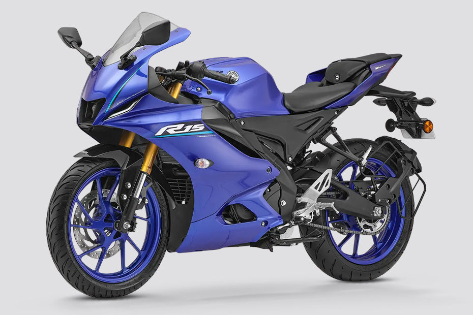

Best Engine Oil for Motorcycles in India (2026)
Best Engine Oil for Motorcycles in India (2026)

Supersport · 155cc · 18.6 bhp · 1,80,000 ex-showroom
Start with these essentials. Each category has a budget pick and a best overall pick.
Buy your helmet and crash guard first — they protect you and the bike. Then add a phone mount for navigation and a bike cover for parking.
Non-negotiable. A good helmet is the single most important piece of gear you will ever buy. Do not cheap out here.

Mount your phone for navigation without holding it. Get a vibration-free mount — it protects your phone camera from the bike's vibrations.
A dry chain wears out fast and affects performance. Lube it every 500 km and it will last significantly longer.

Quick tips for new R15 V4 owners.
Schedule your first service at Every 3,000 km. Do not skip it — the first service breaks in the engine properly.
Engine Oil Guide →Keep RPMs under 4000 for the first 500 km. Vary your speed, do not cruise at constant RPM, and avoid hard acceleration. This sets up your engine for years of reliable service.
Check tyre pressure weekly. A properly inflated tyre improves mileage, handling, and safety. Keep the chain clean and lubed every 500 km.
Tyre Pressure Guide →Get comprehensive insurance for at least the first year. Third-party only covers damage to others, not your bike. Add zero-depreciation if available.
Everything you need to know about owning and accessorizing your R15 V4.
Start with the essentials. A certified helmet, phone mount for navigation, and chain lube to keep the drivetrain happy.
Everything you need for the daily grind. Safety gear, navigation, and basic maintenance products to keep the R15 V4 running smoothly.
For Saturday morning rides and Sunday coffee runs. Crash protection, proper gloves, and a tyre inflator for peace of mind on longer rides.
Make the R15 V4 tour-ready. Luggage solutions, riding jacket, and gear to handle long highway stretches comfortably.
No compromises. The best gear and accessories for the R15 V4 — because you and your bike deserve it.
OEM accessories fit perfectly but cost more. For the R15 V4, aftermarket offers good value for non-critical items like phone mounts and bike covers. For crash protection, go OEM or from a trusted brand.
Keep your R15 V4 running at its best with this maintenance timeline.
Skipping services costs more in the long run. Regular chain cleaning, oil changes, and tyre checks keep your bike safe and preserve resale value. Follow the schedule below and use quality products.
Basic inspection, chain lube, tyre pressure check
Engine oil replacement, air filter cleaning
Chain and sprocket inspection, valve clearance check
Brake pad replacement, fork oil change
Clean, lubricate, and adjust your chain like a pro
Read Guide →Proper washing technique to protect paint and components
Read Guide →Optimal pressures for solo, pillion, and loaded riding
Read Guide →Best oils and change intervals for your engine
Read Guide →Known issues with the R15 V4 and how to fix them.
Most of these problems can be prevented with regular maintenance. Follow the maintenance schedule and invest in quality accessories to avoid costly repairs.
Browse compatible accessory categories for your R15 V4. Each category has buying guides and expert picks.
Helpful articles and buying guides for R15 V4 owners.
Best Engine Oil for Motorcycles in India (2026)
Complete Guide to Chain Maintenance for Indian Motorcycles
How to Wash Your Motorcycle Like a Pro
The Yamaha R15 V4 is priced at ₹1,80,000 ex-showroom. On-road prices vary by city — expect roughly 10-15% more depending on your state's road tax and insurance.
The R15 V4 delivers around 46 kmpl according to ARAI tests. In real-world city conditions, expect 10-15% less. Highway riding usually gets closer to the claimed figure.
The R15 V4 handles moderate long-distance rides well. For multi-day touring, invest in a comfortable seat, windscreen, and luggage. It is not a dedicated tourer, but with the right setup, it gets the job done.
Start with a helmet, phone mount, and essential maintenance products. Browse helmet guide, phone mount guide, engine oil guide, chain lube guide for category-specific recommendations.
Follow the manufacturer's schedule — typically every Every 3,000 km. Regular oil changes, chain maintenance, and brake checks keep the bike running right.
Yes, the R15 V4 comes with Dual-channel ABS. Dual-channel ABS is a significant safety advantage — both wheels are covered.
The R15 V4 has a seat height of 800 mm. Riders under 5'6" may want to test sit before buying — flat feet at stops inspire confidence.
Yes. The R15 V4 is well-balanced with manageable power, making it suitable for new riders. Just invest in proper safety gear and take it easy while you build confidence.
The R15 V4 can tour, but it needs some setup. A comfortable seat, windscreen, and saddlebags make a big difference. It is more suited for weekend trips than cross-country adventures.
The R15 V4 can reach around 100-120 km/h depending on rider weight, road conditions, and wind. These are approximate figures — we do not recommend testing top speed on public roads.